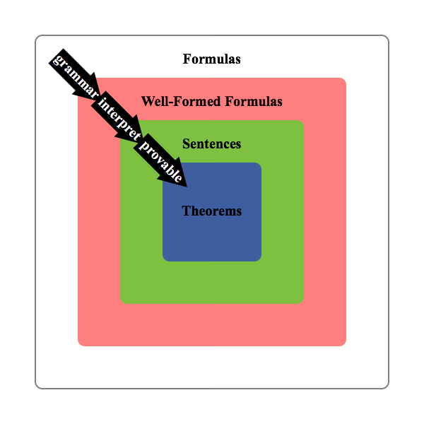

Formal Logic
Syntax is anything having to do with formal languages or formal systems without regard to any interpretation or meaning given to them. It is concerned with the rules used for constructing and transforming strings.Semantics is the study of interpreting a formal language. A logical system is a formal system with semantics.
The following two articles provide a brief overview of syntax and semantics to facilitate future learning of logic, which, in my experience, is extremely difficult if you don't command the jargon presented here. Both before and after reading the two articles below, consider these two graphs. The summarize the big ideas.
|  |